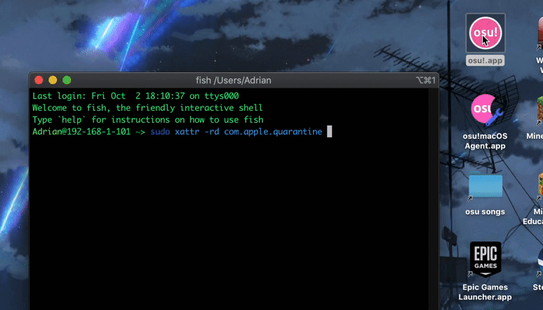

Using the macOS Terminal to repair Wineskins¶
On the bleeding edge? You can also use the Terminal to repair your Wineskin.
Open Terminal. It should be in your
Applications/Utilitiesfolder.Type the following command.
sudo xattr -rd com.apple.quarantine "~/path/to/my/osu\!.app"
where ~/path/to/my/osu\!.app is the filepath to your osu! install.
Warning
Using the terminal with sudo will allow you to perform commands as admin. Improper use of the terminal can negatively affect your computer. Please don’t type something you don’t completely understand - ask us a question instead!
If you choose to use the macOS Terminal to repair Wineksins, then below are some helpful tips if you’re a bit lost.
Escaping characters¶
For an application with the name osu!.app, the ! will confuse the Terminal window. Therefore, you must escape it by prefixing the ! with a \ (backslash) to form osu\!.app. It is also recommended you enclose the filepath in quotation marks.
Entering your password¶
You may be asked for your password. While entering your password the cursor might blink but you won’t see any characters appear on the screen - this is normal! Just proceed to type your password as if there was a dialog box there, and hit Enter once you’re done. If you enter your password wrong, the prompt will re-appear and you can try again.
Permissions¶
If you get a Permission denied error it means you aren’t using an administrator account. In your Terminal window, type:
su - administrator
where administrator is the name of your system’s admin account. When the Password: prompt appears, enter your password for administrator (or whatever your admin account is). Then try running the Terminal command (or to do this automatically, type sudo !!).
Finding the name of the administrator account¶
If you don’t know which account is your admin account (like if you use a family computer), go to the Apple menu (top-left corner of the screen) > System Preferences... > Users & Groups and you should be able to see which account is your administrator account. You’ll still need the password to execute the command though.
sudo warning¶
On older macOS versions, you may get a warning that looks like this.
Improper use of the sudo command could lead to data loss or the deletion of important system files. Please double-check your typing when using sudo. Type "man sudo" for more information. To proceed, enter your password, or type Ctrl-C to abort.
Type your password as normal, as shown above.
Finding osu!’s filepath¶
Having trouble finding the filepath of your osu! installation? You can drag and drop the file from your installation directory (or the Desktop) to get the path!
